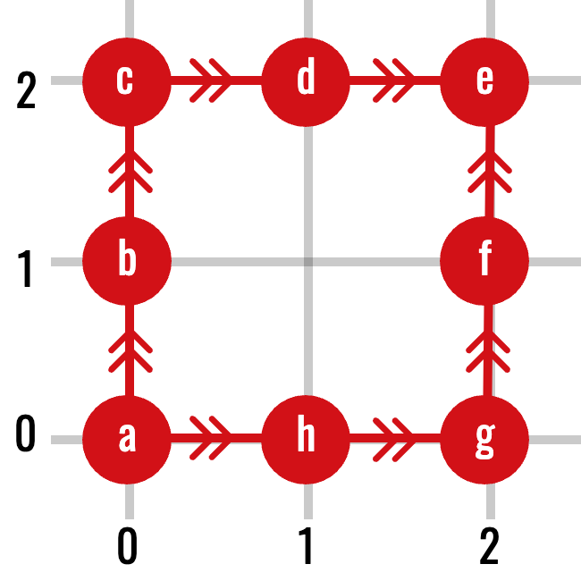
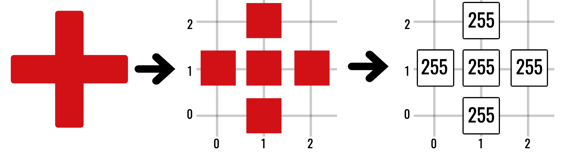
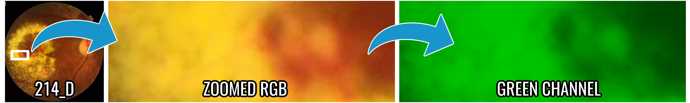
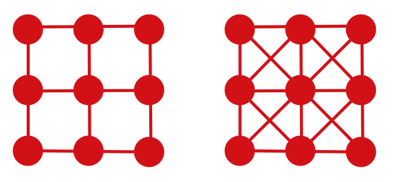
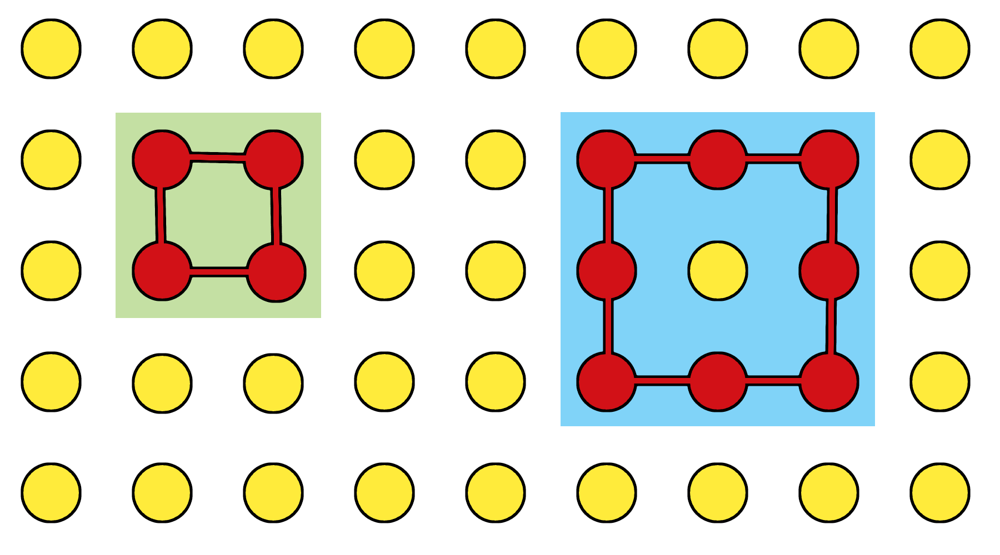

Graphs and Digital Images
Turning pixels into finite neighbourhood structures
A digital image is a rectangular array of measurements. Topologically, the important information is not only the value of each pixel, but also which pixels are neighbours. Graphs provide the simplest finite model of that relationship.
The previous chapter used paths \(\gamma\colon[0,1]\to X\) to define continuous connectivity. A computer image contains only finitely many sample locations, so we replace a continuous path by a finite sequence of adjacent pixels. This is the same conceptual question—“can one location be reached from another?”—in a representation a computer can enumerate.
This chapter uses graphs to settle adjacency and thresholding first. It then explains why graphs alone are insufficient for holes and why pixels must be promoted to filled squares in a cubical complex.
1 Graphs
Definition 1 (Graph and path) A graph is a pair \(G=(V,E)\) consisting of a set of vertices \(V\) and a set of edges \(E\). For an undirected simple graph, each edge is an unordered pair \(\{u,v\}\) of distinct vertices.
A path from \(v_0\) to \(v_m\) is a sequence
\[ v_0,v_1,\ldots,v_m \]
such that \(\{v_{i-1},v_i\}\in E\) for every \(i\). Two vertices are connected if there is a path between them. This relation partitions \(V\) into connected components.

The arrows show that graphs may also carry direction. The pixel-adjacency graphs used below are undirected, so a connection can be traversed in either direction. When reading the example only as an undirected graph, simply forget the arrowheads. This distinction matters because the equivalence relation in the next result uses undirected paths.
Proposition 1 (Graph connectivity is an equivalence relation) On the vertex set of an undirected graph, define \(u\sim v\) when there is a path from \(u\) to \(v\). Then \(\sim\) is an equivalence relation, and its equivalence classes are the connected components.
Proof. The length-zero path shows \(u\sim u\), so the relation is reflexive. Reversing a path from \(u\) to \(v\) gives a path from \(v\) to \(u\), so it is symmetric. Concatenating a path from \(u\) to \(v\) with one from \(v\) to \(w\) gives a path from \(u\) to \(w\), so it is transitive. The equivalence classes therefore partition the vertex set.
Graphs already capture zeroth-dimensional topology: the number of graph components is the quantity later denoted \(\beta_0\).
2 Pixel grids
Definition 2 (Digital image) Let
\[ \Omega\subset\mathbb Z^2 \]
be a finite set of pixel coordinates. A grayscale digital image is a pair \((\Omega,I)\), where
\[ I\colon\Omega\to\mathbb R \]
assigns an intensity to each pixel. For an 8-bit image, the values usually lie in \(\{0,\ldots,255\}\).

Colour images have several intensity functions—typically red, green, and blue. Many mathematical pipelines analyse one channel at a time or first transform the channels into a scalar field.
For the retinal case study, the green channel is used because it gives strong contrast between the background retina, dark vessels and haemorrhages, and bright exudates. This is not a topological requirement: it is a modelling choice made before topology is computed. A different scalar channel can induce a different filtration and therefore a different persistence diagram.

3 Four- and eight-neighbour adjacency
For pixels \(p=(p_1,p_2)\) and \(q=(q_1,q_2)\):
- they are 4-neighbours when \(d_1(p,q)=1\);
- they are 8-neighbours when \(d_\infty(p,q)=1\).
Four-neighbour adjacency permits horizontal and vertical steps. Eight-neighbour adjacency also permits diagonal steps.
Recall that
\[ d_1(p,q)=|p_1-q_1|+|p_2-q_2|, \qquad d_\infty(p,q)=\max\{|p_1-q_1|,|p_2-q_2|\}. \]
Thus \(q=p+(1,0)\) has both distances equal to \(1\), while \(q=p+(1,1)\) has \(d_1(p,q)=2\) but \(d_\infty(p,q)=1\). The formulas therefore recover exactly the horizontal/vertical and diagonal descriptions.

The choice changes connectivity. Two diagonally touching pixels form two components under 4-connectivity but one component under 8-connectivity. Therefore, adjacency is part of the mathematical model—not a harmless implementation detail.
Using the same adjacency rule for both foreground and background can create paradoxical interpretations of components and holes. Cubical complexes resolve much of this ambiguity by representing pixels together with their shared edges and vertices.
4 Threshold sets
An image becomes a family of binary shapes when we vary an intensity threshold.
For a one-row image with intensities
\[ \bigl(2,\ 7,\ 4\bigr), \]
the sublevel sets at thresholds \(2\), \(4\), and \(7\) contain respectively the first pixel; the first and third pixels; and all three pixels. At threshold \(4\) there are two components, but at threshold \(7\) the middle pixel joins them. Persistent homology will later record this merge rather than forcing us to choose one “correct” threshold.
Definition 3 (Image level sets) For \(t\in\mathbb R\), define the sublevel set
\[ L_t=\{x\in\Omega:I(x)\leq t\}. \]
If \(s\leq t\), then \(L_s\subseteq L_t\). Increasing the threshold can add pixels but never remove them.
The corresponding superlevel set is
\[ U_t=\{x\in\Omega:I(x)\geq t\}. \]
Equivalently, superlevel sets can be studied as sublevel sets of the inverted image
\[ \widetilde I(x)=M-I(x), \]
where \(M\) is the maximum intensity.
Lemma 1 (Sublevel sets are nested) If \(s\leq t\), then \(L_s\subseteq L_t\).
Proof. If \(x\in L_s\), then \(I(x)\leq s\leq t\), so \(x\in L_t\).
Sublevel sets reveal dark structures early. Superlevel sets reveal bright structures early. Persistent homology records how the connectivity and holes of these sets evolve.
At this point, \(L_t\) is only a set of pixel coordinates. We can use an adjacency graph to count its connected components, but we have not yet said which edges, vertices, or filled squares belong to the thresholded shape. The next chapter introduces cubical complexes and then upgrades these coordinate sets into genuine filtered cell complexes.
5 Components by graph search
Once an adjacency rule is fixed, connected components can be found by breadth-first search or depth-first search.
def components(vertices, neighbours):
unseen = set(vertices)
result = []
while unseen:
start = unseen.pop()
stack = [start]
component = {start}
while stack:
vertex = stack.pop()
for nxt in neighbours(vertex):
if nxt in unseen:
unseen.remove(nxt)
component.add(nxt)
stack.append(nxt)
result.append(component)
return resultThis is enough for \(\beta_0\), but graphs alone do not directly encode filled areas. A four-edge cycle might represent a genuine hole or merely the boundary of a filled square. To distinguish these cases, we need higher-dimensional cells.

6 From graphs to cell complexes
A graph has vertices and edges. A cell complex adds faces and higher-dimensional cells:
\[ \text{vertices}\longrightarrow \text{edges}\longrightarrow \text{squares or triangles}\longrightarrow\cdots \]
The distinction is crucial. The boundary of a square is a cycle; once the square itself is present, that cycle is filled and no longer represents a hole.
Digital images naturally lead to cubical complexes because pixels are squares. Point-cloud data often lead to simplicial complexes because triangles and higher-dimensional simplices can be built from pairwise relations.
7 A useful discrete gradient
Later, when studying image stability, we will need to measure the largest intensity jump between neighbouring pixels. Given a chosen adjacency graph, define
\[ L_I=\max_{\{x,y\}\in E}|I(x)-I(y)|. \]
This is a graph-based Lipschitz constant. Large values indicate sharp edges; small values indicate slowly varying intensity. Interpolation across a high-gradient image can cause much larger topological changes than the same spatial motion applied to a smooth image.
- A graph turns adjacency into a finite notion of path and component.
- An intensity threshold turns one image into a nested family of binary shapes.
- The adjacency convention is part of the model.
- Graphs count components, but filled cells are needed to distinguish a loop from the boundary of a filled region.
The next chapter supplies those filled cells.
8 Exercises
- Determine the 4- and 8-neighbours of \((3,4)\) in an unrestricted grid.
- Give three pixels that are connected under 8-connectivity but disconnected under 4-connectivity.
- Prove that \(L_s\subseteq L_t\) whenever \(s\leq t\).
- For intensities \(\{0,2,5,7\}\), list the distinct sublevel sets.
- Explain why a graph cannot distinguish an unfilled triangle from a filled triangle.
Previous: Topological Spaces · Course contents · Next: Cubical and Simplicial Complexes